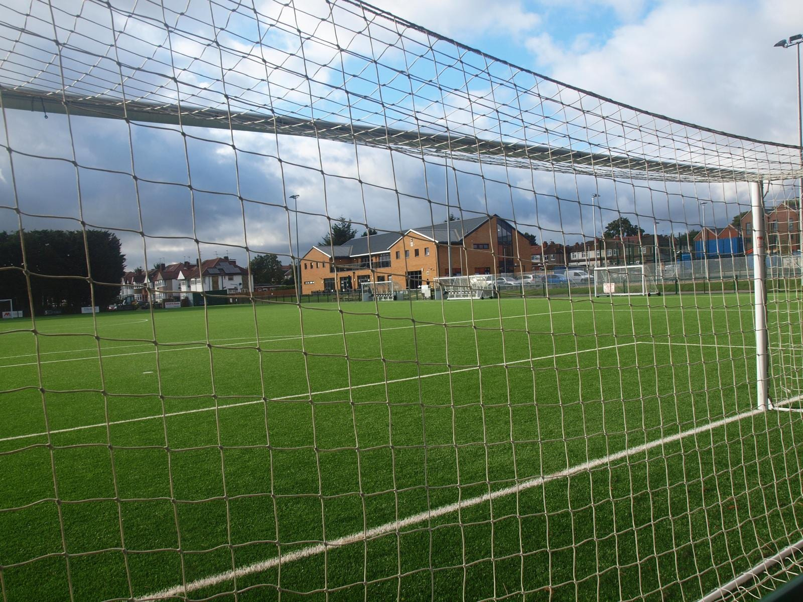

Founding supporters · Harrow since 1933
The first hundred supporters to put their name to the club’s next chapter. Free to join. Your own supporter number, given in the order people sign up.
Loading the count…
One minute. No account, no password, no payment.
Leave blank
Your number is given by the club’s database at the moment you join.